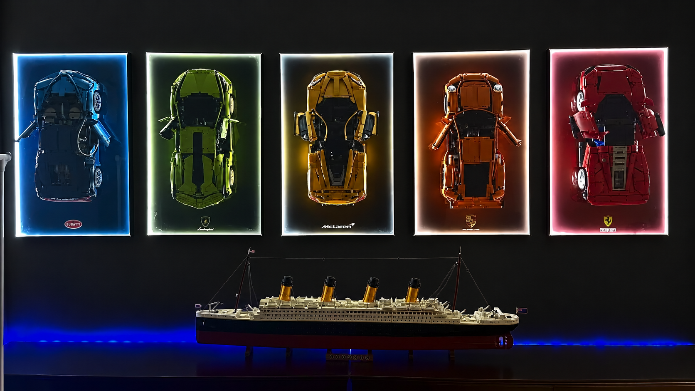

Software Engineer Windsor & Toronto
Hayden
Longerich
Proof that I love building things!
yes. Thats my actual collection!
LOADING THE 3D BUILD
McLAREN P1 / LEGO® TECHNIC
MOVE OR TAP TO LOOK UNDERNEATH

Software Engineer Windsor & Toronto
Proof that I love building things!
yes. Thats my actual collection!
MOVE OR TAP TO LOOK UNDERNEATH